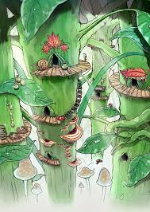
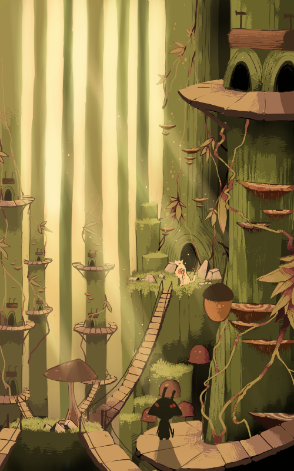
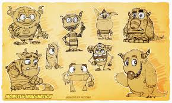

These images are from a video game level that had a similar environment to our story's world (a tiny society within a natural ecosystem). The first image is a good visual reference for the type of coloring I think we want, but the image itself is super blurry. The second image is the same environment drawn in a different style, and both of them have a nice hand-drawn feeling to them, which we will have in our story. I like both of them a lot because they embrace their styles and set a warm homely tone.
 This image demonstrates an illustration style that we could consider for our characters, who are also whimsical/cute monster-like characters. I like them because they all have a certain personality to them purely through their visual design.
I absolutely love this interactive website, and the way that it is styled. It provides a unique experience for the visitor, especially with its scrolling and tilting mechanism. I love the dedication to its aesthetic, and how all the elements of the site are working well together to create this interactive story.
This site is designed to give first-person accounts of living through a tornado that hit Alabama in 2011. I love the loading page tornado, and the way that the parallax scrolling works on certain pages.
This website tells a story by Pierre Herme Nicolas Buffe, in a very calming, interesting way. I like the click and drag mechanism to get to the next page, and the simplicity of the design.
This is a portfolio website by Renaud Rohlinger that I wish I had found before our last project! I love how it allows the visitor to export the world by mouse location and scrolling. I also love the 3D modeling! I don't know how difficult it is to integrate models into a website but I would love to do something like that with the backgrounds of our story site.
My target audience for this site is mostly children, because it is a children’s story, but not excluding other age groups! The writing and narration are currently geared toward children, and the aspect of having a “moral of the story” is reminiscent of children’s books and fables. However, plenty of other age groups are able to enjoy content that’s traditionally aimed at children (like animated TV shows and movies), and often their parent's will interact with the content as well. I hope that I can convey an aesthetic sensibility and a sense of funloving-ness with this site, which will hopefully feel very whimsical and wholesome by its design. I’m not sure how difficult it will be to implement some of the mechanisms shown in the four websites above, but I’m hoping we can do something interesting with the scrolling or with mouse location. It would be really cool to include 3D modeling in some way, because Kris is very good at illustration, but my work is often more 3D, so if we could make them work together somehow, I think the website would look really good. I recently worked on an animation project that allowed me and a friend to do all 3D backgrounds, with other team members doing the 2D character animations, so it would be cool if we could do that with our website. I would also like to see our site implement audio somehow, as it had a very immersive effect in the websites I was looking at for inspiration.